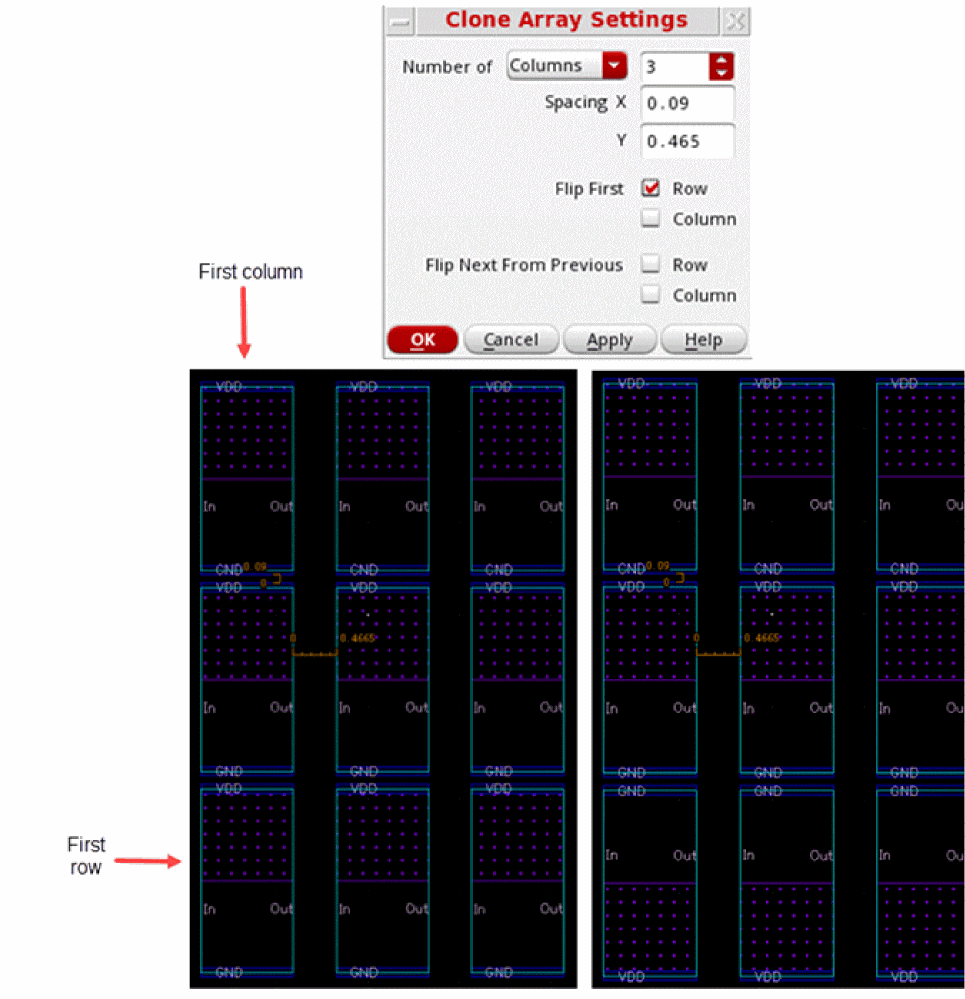
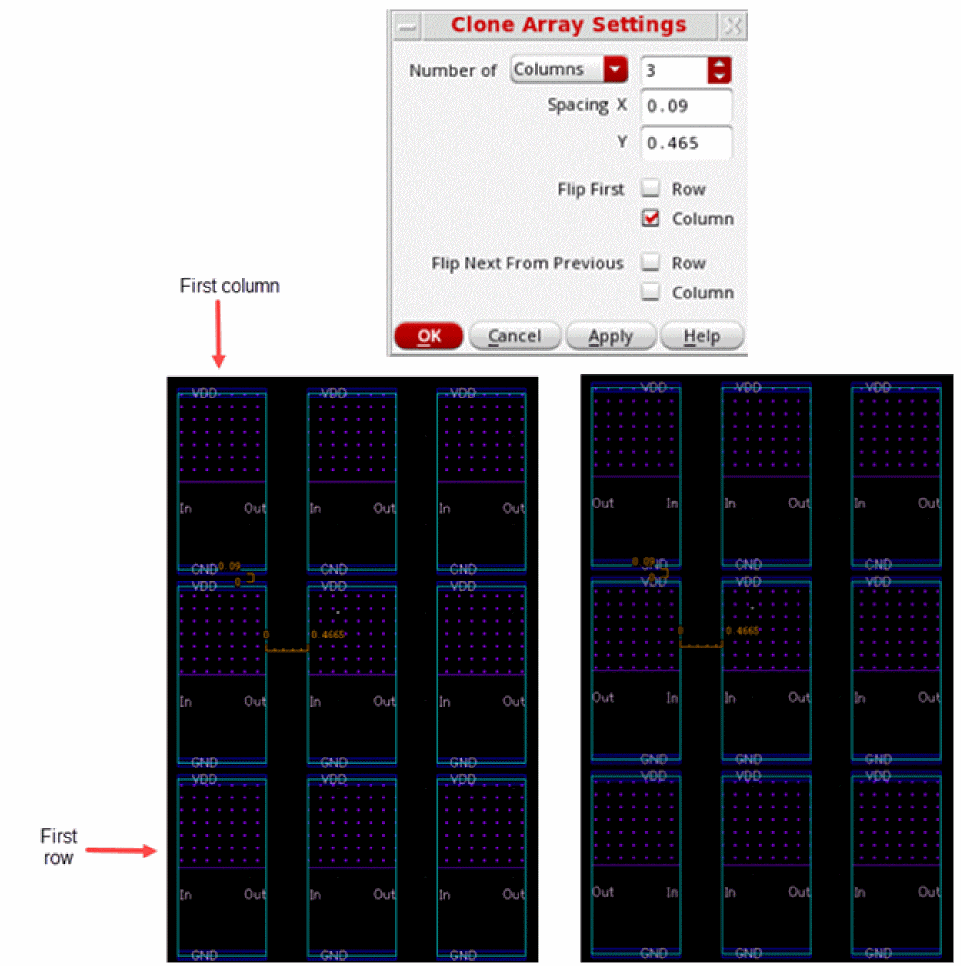
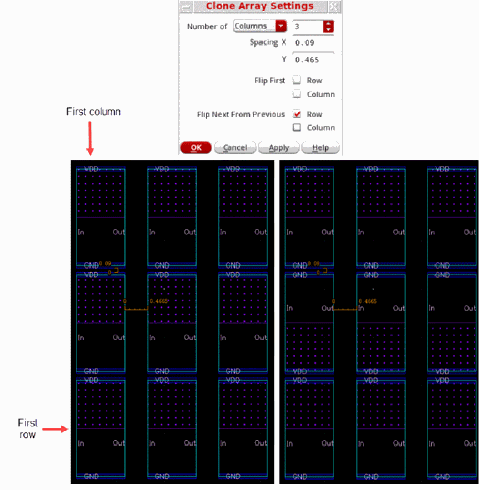
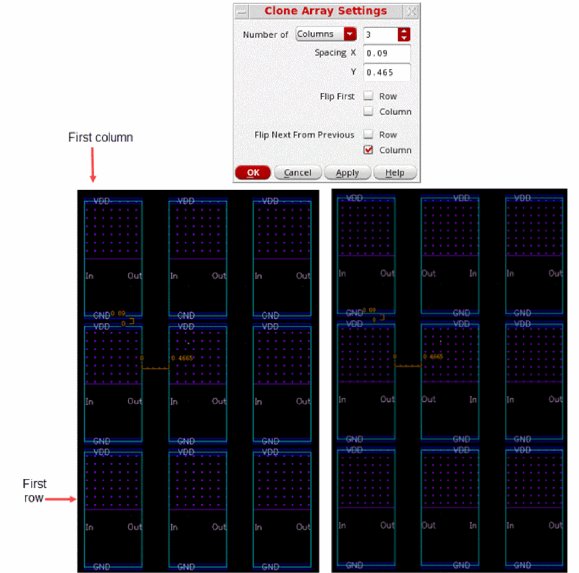
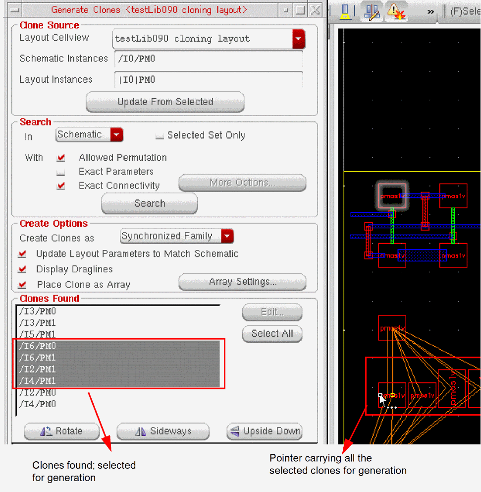
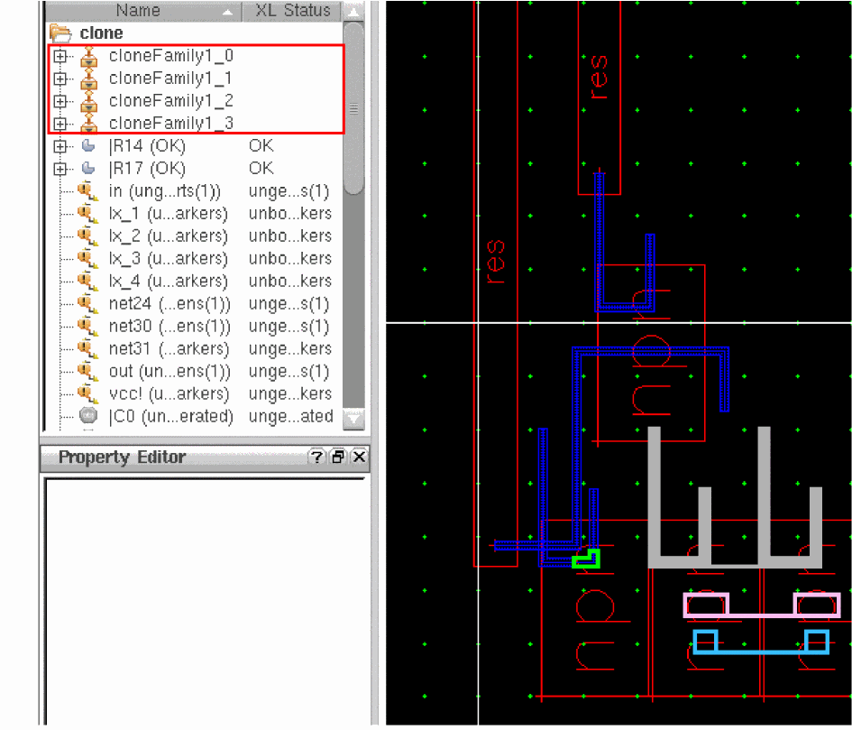

Clone Placement as an Array
By default, if you select multiple clones from the Clones Found list, you can place only one selected clone at a time in the layout canvas. You can verify this in the Navigator assistant by observing that only one clone group, such as cloneFamily1_1, in the figure below gets generated, which maps to the first clone from the selected list.
The other two selected clones that are not yet placed, still appear selected in the Clones Found list, as shown in the figure above. Also notice that the pointer in the layout canvas is now followed by another clone, which corresponds to the next clone in the list of selected clones. To place this clone and any remaining selected clones, you need to click in the canvas as many times as the number of selected clones to place.
Instead of placing the selected clones one by one, as described above, you can choose to place all the selected clones in a single click as a clone array. To do this, choose the Place Clone as Array check box in the Generate Clones form, as shown in the figure below.
Alternatively, you can set the placeCloneAsArray environment variable to t.
When the Place Clone as Array check box is selected, the Array Settings button is enabled. Clicking the Array Settings button opens the Clone Array Settings form that you can use to define the specifications for the clone array to be generated.
Related Topics
Specifying Clone Array Settings
In the Clone Array Settings Form form:
- Specify the number of clones to be generated per Row or Column.
-
Specify the Clone X Spacing to be used when placing the clones in columns.
For information about how the array spacings are applied, see Determining the Clone Array Spacings. -
Specify the Clone Y Spacing to be used when placing the clones in rows.
For information about how the array spacings are applied, see Determining the Clone Array Spacings. -
(Optional) Specify that the clones from the first row and/or the first column in the array need to be flipped from the clone source.
-
Click Row in the Flip First check box to flip the first row of the clone array you want to generate on the layout.
When the value ofcloneArrayFlipFirstRowis set tot, each clone in the first row (bottom-most row) is flipped along the X-axis.
 -
Click Column in the Flip First check box to flip the first column of the clone array you want to generate on the layout.
When the value ofcloneArrayFlipFirstColumnis set tot, each clone in the first column (leftmost column) is flipped along the Y-axis.

-
Click Row in the Flip First check box to flip the first row of the clone array you want to generate on the layout.
- (Optional) Specify whether the clones need to be flipped alternatively in each row and/or column.
-
Click Row and Column in the Flip Next From Previous check box to flip the next row and column of the clone array you want to generate in the layout.
When the value ofcloneArrayFlipNextFromPreviousRowis set totin each column, the clone from row N is flipped along the X-axis in relation to the clone from row N-1.
When the value ofcloneArrayFlipNextFromPreviousColumnis set totin each row, the clone from column N is flipped along the Y-axis in relation to the clone from column N-1.
 -
Click OK to save the clone array settings, which will be used the next time you generate clones.
All the clones that you selected from the Clones Found list follow the pointer in the layout canvas, and are placed together on a single click, as shown in the figure below.
You can also verify this using the Navigator assistant, as shown in the figure below. Notice that the Navigator assistant displays new clone groups that have been created for all the clones that were selected for generation.

Determining the Clone Array Spacings
To determine the array spacings (both X and Y) to be applied between the clone bBoxes, the clone bBoxes are first computed from the merged bBoxes of clone figs (shapes + instances).
For determining the spacing between the instances, the displayed bBoxes are used. Therefore, the clone bBox computation depends on the options selected on the
- If the use True BBox option is selected, the true bBoxes of the instances are used to compute the clone bBox.
- If the Instance Drawing Mode option is set to P&R Boundary, the instance PR boundaries are used to compute the clone bBox.
- If the Instance Drawing Mode option is set to Snap Boundary, the instance snap boundaries are used to compute the clone bBox.
Specifying Transform From Settings
To specify the Transform From settings:
- From the Transform From drop-down menu, choose the appropriate clone transformation option—Previous or Source—and choose the appropriate orientation from the Transform combo box.
-
Click at the required location in the layout window to place the transformed clone.
- If you choose the Source transformation option from the Transform From drop-down menu, the transform displayed in the Transform group box is applied from the clone source.
- If you choose the Previous transformation option from the Transform From drop-down menu, the transform displayed in the Transform group box is applied from the previously generated clone.
If you choose the Previous transformation option from the Transform From drop-down menu and create the first clone using no previous clone, the transform displayed in the Transform combo box is applied from the clone source. -
Click anywhere in the layout window to place the next clone found.
- If you choose the Source transform, the next clone is also rotated by the specified transform value, which is relative to the clone source. This means that the second clone has the same transform as the previous one.
-
If you choose the Previous transform, the second clone is rotated by the specified transform value, which is relative to the previously generated clone. This means that the second clone is rotated twice relative to the clone source.
For example, if you choose the Previous transform and select an R90 orientation in the Transform combo box, then the first clone is rotated by 90 degrees relative to the clone source. The second clone is rotated by 90 degrees relative to the previous clone. This means that the second clone is rotated twice to be effectively rotated by 180 degrees relative to the clone source.
Return to top